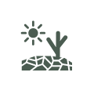

Bem-vindo ao curso
As mudanças climáticas já impactam diretamente a saúde da população e a organização dos serviços de saúde em todo o Brasil. Eventos como enchentes, secas, deslizamentos, ondas de calor e crises hídricas têm se tornado mais frequentes e intensos, ampliando vulnerabilidades sociais e produzindo novos riscos à saúde.
Nesse cenário, a Atenção Primária à Saúde (APS) desempenha papel fundamental na coordenação do cuidado, na prevenção e na resposta aos eventos climáticos extremos, articulando ações de vigilância e cuidado nos territórios. No entanto, ainda é necessário fortalecer a compreensão de que esses eventos fazem parte de uma nova realidade que exige preparação contínua e reorganização dos serviços de saúde.
Este curso convida você a refletir sobre os impactos das mudanças climáticas na saúde pública e sobre o papel estratégico da APS no enfrentamento desses desafios. Ao longo da formação, serão abordadas estratégias de preparação, vigilância e cuidado, fortalecendo a atuação integrada do SUS diante das emergências climáticas e seus efeitos na população brasileira.
Transcrição do Vídeo: nome do vídeo
[Toca música inicial]
Apesar do processo de decadência da escravidão a partir de 1850 e do movimento abolicionista em 1880 (representado por influentes negros como Luís Gama e André Rebouças), somente em 1888 foi decretada a Lei Áurea que determinou o fim da abominável escravidão no Brasil. No entanto, a referida Lei não implicou no estabelecimento efetivo de suporte, atenção e cuidado para com a situação das pessoas negras que foram libertadas, conservando-se a desigualdade social, econômica e política. Isso significa que a libertação não lhes deu cidadania, porque se tornaram reféns da falta de trabalho e de moradia.
[Pausa musical entre assuntos]
Apesar da luta histórica de movimentos e grupos sociais negros, somente em tempos muito recentes foram elaboradas legislações e políticas públicas voltadas para a promoção e salvaguarda de direitos de grupos populacionais historicamente marginalizados, discriminados e vulnerabilizados. Como exemplos dessas políticas temos:
A Lei Nº 7.716, de 5 de janeiro de 1989 (conhecida como “Lei Caó”), que define os crimes resultantes de preconceito de raça ou de cor;
A Lei Nº 12.711, de 29 de agosto de 2012 (conhecida como “Lei de Cotas”), que garante a reserva de 50% das matrículas por curso e turno nas universidades federais e nos institutos federais de educação, ciência e tecnologia a alunos oriundos integralmente do ensino médio público, em cursos regulares ou da educação de jovens e adultos.
Na área da saúde pode-se destacar a Política Nacional de Saúde Integral da População Negra (PNSIPN) de 2009 que tem como objetivo “promover a saúde integral da população negra, priorizando a redução das desigualdades étnico-raciais, o combate ao racismo e à discriminação nas instituições e serviços do SUS”.
[Pausa musical entre assuntos]
Uma reflexão importante: a Lei Áurea declarou extinta a escravidão, mas não significou mudanças significativas no racismo nem na desigualdade tão impregnados na sociedade brasileira. Ainda hoje, 135 anos depois, é possível sentir as sequelas dessa que é a marca mais cruel da herança da escravidão e que mantém uma cultura de opressão e violência.
Sendo assim, o racismo que estrutura a sociedade também é resultado do processo de escravidão e tem impacto direto na desigualdade social, com repercussões nas relações econômicas, sociais, culturais e institucionais do país. Este é um processo em que as condições de organização da sociedade privilegiam grupos de determinada cor ou etnia em detrimento de outros. No Brasil e em outros países, essa distinção favorece os brancos e coloca como subalternos negros e indígenas.
[Toca música final]
-
1 . Mudanças Climáticas e Saúde
Ver aulas
Iniciar Módulo arrow_forward_ios
-
2 . Desastres Intensivos
Ver aulas
Iniciar Módulo arrow_forward_ios
-

3 . Desastres Extensivos Ver aulas Iniciar Móduloarrow_forward_ios -
4 . Extremos de Temperatura
Ver aulas
Iniciar Módulo arrow_forward_ios
-
5 . Eventos Intensificados pelas Mudanças Climáticas
Ver aulas
Iniciar Módulo arrow_forward_ios